Overview
Chronic kidney disease (CKD) affects around 17.5% of Thai adults, and roughly 100,000 patients under the National Health Security Office (NHSO) scheme are on kidney replacement therapy. Among dialysis patients in the scheme, 45.4% start dialysis unplanned — defined as starting haemodialysis through a temporary catheter, or needing temporary haemodialysis before peritoneal dialysis. Unplanned starts are linked to higher morbidity and mortality and lower quality of life, and they point to gaps in how treatment options are communicated, how care is planned ahead, and how decisions are shared.
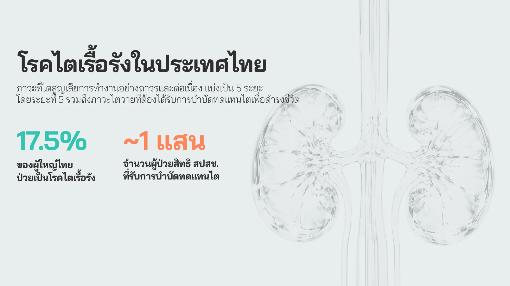
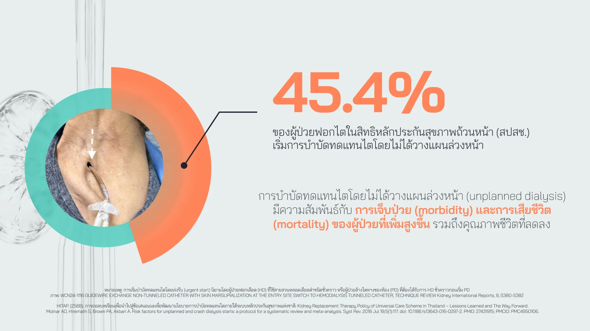
This project, run by TDRI with Thailand Science Research and Innovation (TSRI), set out to synthesise policy proposals to tackle the problem — and to do so by bringing a design research approach into health policy, a space where it is still rare in Thailand. Our five-person design and research team combined the Double Diamond with Experience-Based Co-Design (EBCD), participatory design and transition design, so that every proposal was grounded in the lived experience of patients, families and frontline staff.
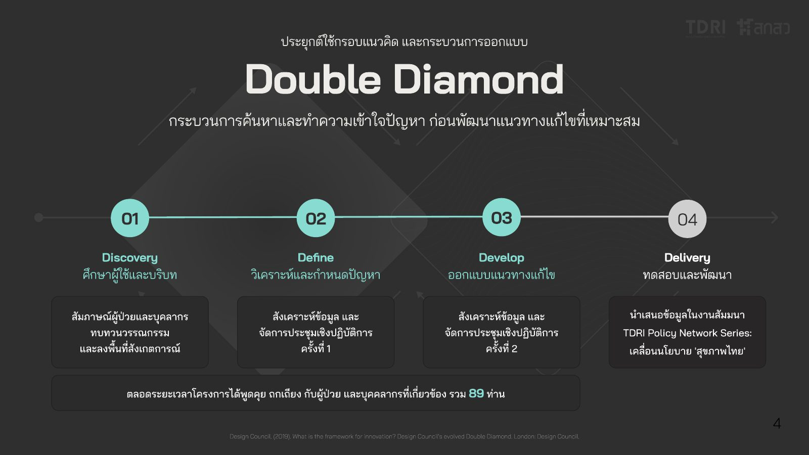
Discover
We interviewed 28 CKD patients and carers and 8 healthcare professionals, reviewed the literature, and observed care at two service units — one in Bangkok and one in a provincial hospital. Interviews were shared across the team so that every researcher heard patients' stories first-hand; I conducted several patient interviews myself.
Mapping the as-is journey
To make the findings discussable with stakeholders, I drafted the structure of the as-is patient journey map — the stages, eGFR thresholds, the patient and clinician lanes, and the emotional layer — and teammates filled in the insights, quotes and pain points from their own interviews.
The map followed patients from before diagnosis, through CKD stage 3 (eGFR < 60) and stages 4–5 (eGFR < 30), to the point of choosing kidney replacement therapy (eGFR < 15). One pattern repeated at every stage: a patient may miss an appointment and slip back into daily life — searching for information on their own, talking it through with relatives, or turning to alternative medicine — until symptoms become severe enough to bring them back as an emergency.
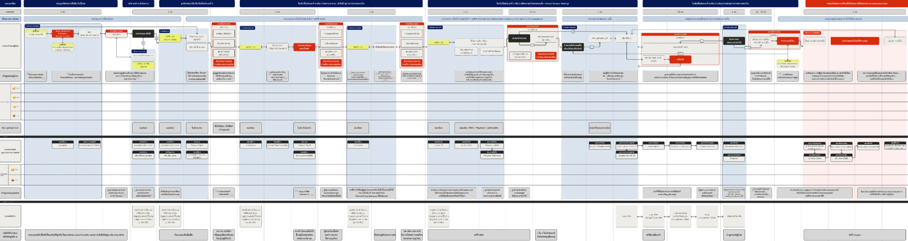
Workshop 1: Sensemaking
We brought 40 participants into the same room: 10 patients, 10 kidney nurses, 6 nephrologists, 4 other physicians, 5 other healthcare staff, and 5 policymakers and policy researchers. I co-facilitated the session with the team. It ran through four activities:
- Roles: each person described what they can control in the kidney care process, what blocks them, and what they wish others understood.
- Journey validation: groups corrected and enriched the as-is journey, adding detail, feelings and messages for the research team.
- Ideal future: participants imagined a system that would prevent unplanned dialysis.
- Drivers of change: what to keep, cancel or add — from household and community up to regional and national level.
Beyond the outputs, the session let each group see the problem beyond their own role — patients heard about clinicians' workload, and clinicians heard what happens to patients between appointments.
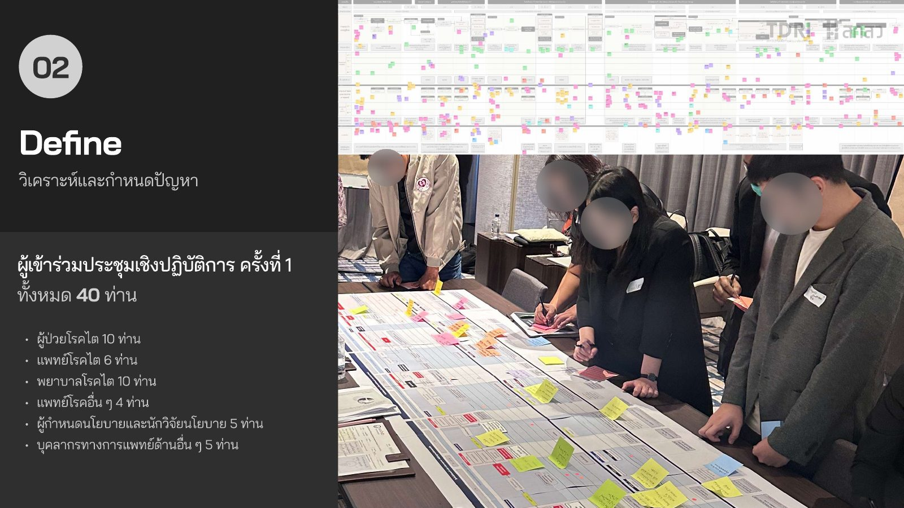
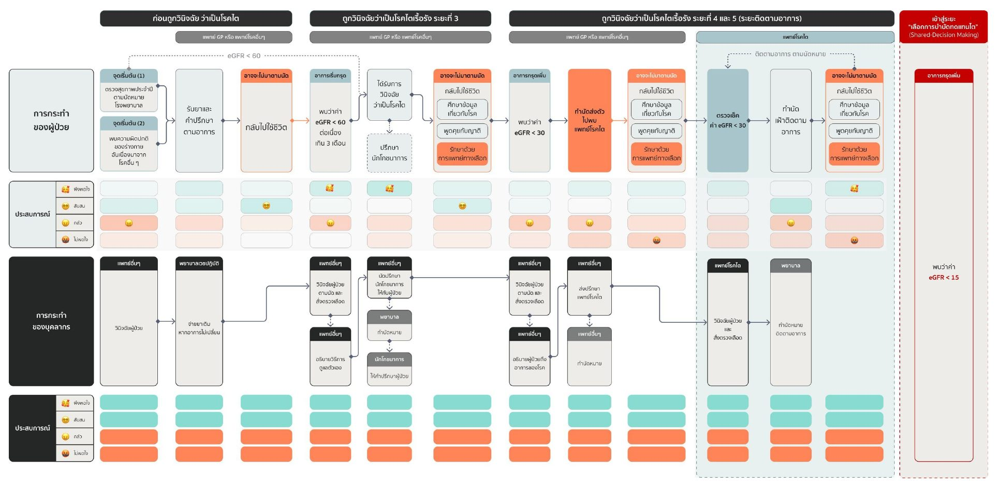
Define
We synthesised the workshop outputs through stakeholder mapping, tension mapping and a problem tree.
01Families are central — but left out
Stakeholder mapping showed that families play a major role in care and treatment decisions, yet receive little treatment information — especially early in the disease, when they are not the primary carer. Tension mapping added that each stakeholder group prioritises different factors, with mixed effects on one another.
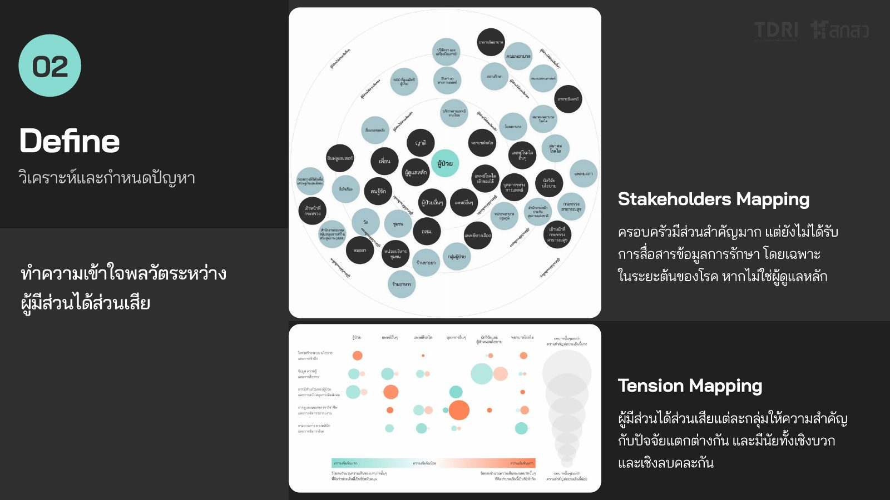
02Two delays drive unplanned dialysis
The problem tree traced unplanned dialysis to two converging delays: delays in the system (diagnosis, approval and referral) and delays in patients' own decisions. Beneath them sat root causes such as denial of the diagnosis, complex entitlements, limited or incorrect knowledge about kidney disease, fear of treatment, unclear CKD/NCD policy communication, IT systems that don't fit clinical workload, and a shortage of nephrology staff.
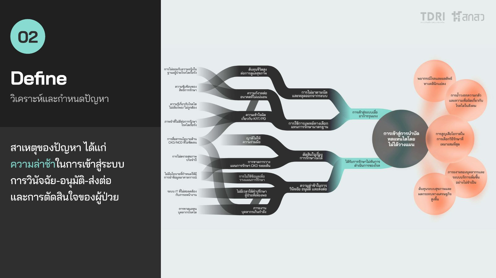
03The future we're designing towards
At the centre of the desired future: patients and families don't just receive information — they understand it and take part in treatment. Around it, services become flexible and prevention-focused, and policy becomes clear and considerate of frontline work.
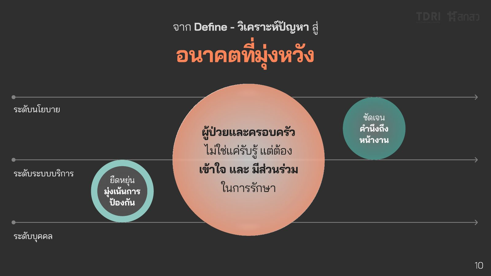
Workshop 2: Co-design critique
With 33 participants — 7 patients, 7 kidney nurses, 5 nephrologists, 2 other physicians, 3 other staff, and 9 policymakers and researchers — we presented the validated journey and synthesised insights, then introduced 12 early solution concepts with mock-ups. Groups assessed each concept from their own role: the benefits they expected, what it would cost them, and what might block it. They also looked at operational readiness, risks and indicators, which gave the team a much stronger basis for prioritising.
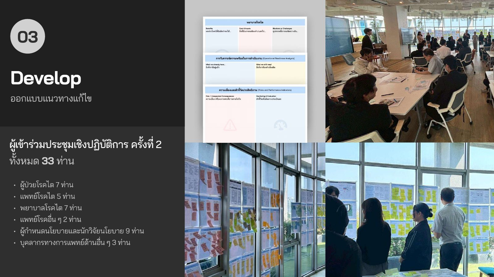
Deliver: 8 policy proposals
We synthesised a to-be service blueprint and narrowed the 12 concepts to 8 policy proposals, each mapped to lead agencies and sequenced over three time horizons.

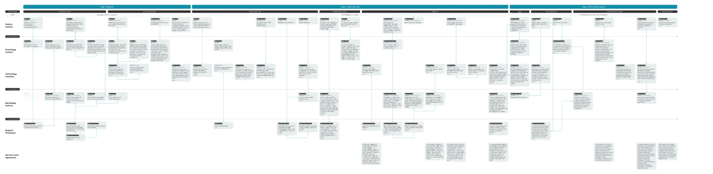
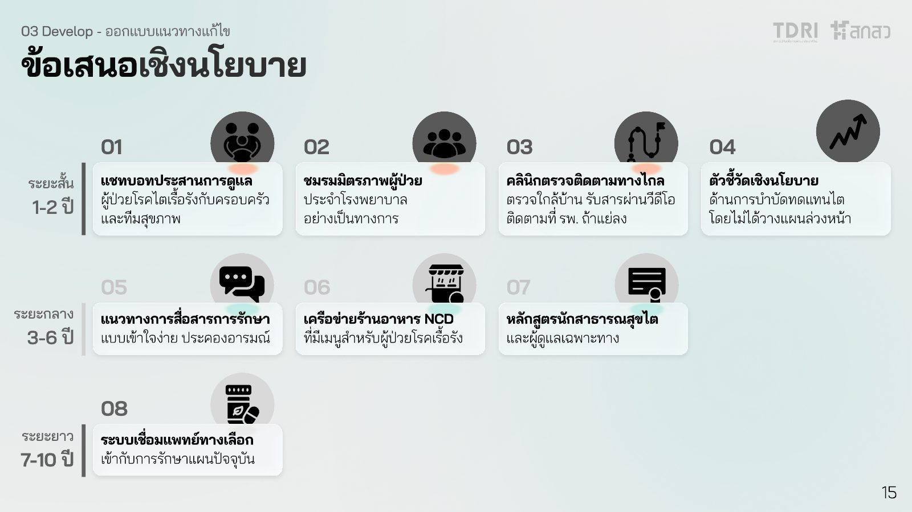
Short term · 1–2 years
-
01My proposal
Family Hub (Promjai)
Lead Ministry of Public Health · Digital Government Agency
A LINE Official Account chatbot that brings families and carers into the care pathway, with updates on the patient's condition, appointment reminders, care guidance and a channel to ask the clinical team questions. It closes the information gap behind uninformed family decisions made at a distance.
This particular project will be discussed further in another case study. Read the Promjai case study →
-
02
Hospital-based Patient Association
Lead Public hospitals
Structured peer-to-peer support inside hospitals that improves emotional wellbeing, self-management and continuity of care, with practical help such as transport coordination and care navigation. It tackles the social isolation that drives poor adherence.
-
03
Asynchronous Clinic
Lead Ministry of Public Health · NHSO · community medical laboratory clinics
CKD monitoring moves to local health centres: patients give specimens near home, nephrologists interpret results remotely, and patients watch recorded video explanations. Hospital visits are needed only for complex cases, cutting travel costs and lost income for families.
-
04
KPI for Prevention
Lead MOPH Kidney Service Plan · NHSO Public Health Service Quality and Standards Committee
Policy indicators that make prevention of unplanned dialysis visible, create accountability and support long-term planning, using existing governance mechanisms to prioritise an issue that has long been overlooked.
Mid term · 3–6 years
-
05
CKD Communication Toolkit & Guidelines
Lead Ministry of Public Health
Standards and tools that help clinicians explain prognosis, treatment options and disease progression clearly, compassionately and consistently, while preserving hope and trust. It strengthens shared decision-making and interrupts the path towards harmful alternative treatments.
-
06
NCD-Friendly Restaurant Network
Lead Department of Health · Thai Dietetic Association (proposed)
A certified network of restaurants and food vendors offering meals suited to CKD and NCD diets (controlled sodium, potassium and phosphorus), promoted through digital and physical channels. It bridges clinical dietary advice and everyday food choices.
-
07
CKD Caregiver and Hygienist Training Programme
Lead Provincial Public Health Offices · Provincial Administrative Organisations
A curriculum that trains allied health workers and carers to support patients beyond clinical settings, bridging the gap between nephrologists and patients and easing the workload on doctors and nurses throughout the treatment journey.
Long term · 7–10 years
-
08
Traditional Thai Medicine Integrated Care
Lead Department of Thai Traditional and Alternative Medicine · Thai FDA · Royal College of Physicians of Thailand · Nephrology Society of Thailand · NHSO
Evidence-based traditional Thai medicine integrated into the healthcare system, respecting cultural beliefs while reducing reliance on unregulated herbal products that lead patients to drop out of care.
The other four Workshop 2 concepts (Online Forum, Patient Hub, CKD Starter Kit and a CKD Clinical Decision Support Backend) didn't make the final eight.
Outcome
We presented the proposals to government and health-sector stakeholders at TDRI's Policy Network Series seminar. Feedback across every stakeholder group was positive — particularly on how the project integrated a human-centred approach and design research frameworks into health policy, which is still relatively new in Thailand. There has been no follow-up from government agencies since the seminar.
The project was named 1st Runner-up in the Optimal Collaborative Research Excellence Award 2026 and is a finalist for the Service Design Award 2026 (results pending).
Reflection
01Shared artefacts make multi-stakeholder work possible
A journey map that patients, nephrologists and policymakers could all mark up became the common language of the project. Structuring it so that each researcher could plug in their own interview findings kept it consistent while spreading the work across the team.
02Designing for policy means designing for adoption
Positive feedback isn't implementation. Without follow-up from agencies, the proposals remain proposals. Next time I'd plan an adoption path earlier — identifying a champion inside each lead agency and piloting the lowest-cost proposal alongside the research.